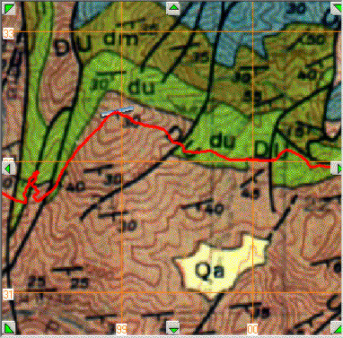
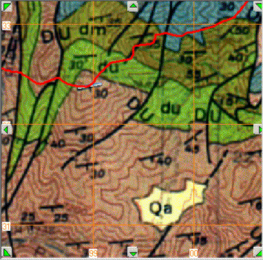

Contact from Scanned Geologic Map
| Click "Strike from map" button. | |
| Digitize the strike line from the dip and strike symbol. A white
line marks the results of the digitization. The accuracy of the strike depends on the length of the strike line. |
|
|
Strike appears on form when you double click the second
point on the strike line. You can modify value if desired. Enter dip and dip direction. Click the "Plane Contact" button, and then double click on the center of the dip and strike symbol. |
 |
The plane's trace will be drawn, in the color on the "Contact" button. Note that the computed contact parallels the drawn contact, although it is valid only within the fault block that contains the dip and strike. |
 |
If an incorrect dip direction is entered (here to the NW, instead of the SE), the traced contact will be wrong. |
Last revision 4/4/2014